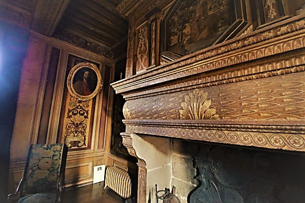
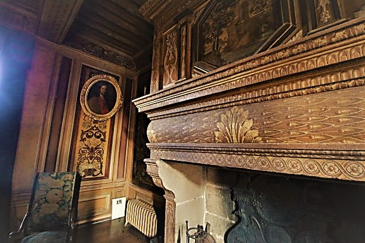

Entrada y gran escalera sur

Esta escalera es una de las primeras en Bretaña que contó con aterrizajes a
construirse en el estilo de medio espacio. A la derecha, el espacio denominado "transporte" permitido
los guardias acceden a varias habitaciones diferentes.

Sala de los guardias

Las guerras
de religión, entre Protestantes y Católicos, son la razón por la cual hay elementos defensivos que no
tienen nada de decorativo. La bretaña controlada por el Duque de Mercoeur (jefe de la Liga bretona en
contra del rey de Francia) sufre varios saqueos y destrucciónes de pueblos , como los que estaban cerca del palacio.

La sala de los guardias es el lugar de vida de los soldados. La arquitectura sobria de la chimenea y la falta de
decoración la diferencia de las otras salas.

Podemos observar :
- una alabarda, una espada y un casco de etiqueta del siglo XVI
- dos pinturas del siglo XVI
- las armas de Francia en un panel de madera, prueba de la lealdad de Gilles Ruelan a la corona

- un armario llamado « malouinière » del siglo XVI : excepcional por su rareza,
es construida con el roble de los barcos de corsarios fuera de uso. Su estílo es de
inspiración flamenca, consecuencia de los numerosos vínculos comerciales de aquel tiempo,
entre la cuidad de Saint Malo y las Provincias Unidas (hoy en día Países Bajos). Totalmente
esmontable y móvil es la prueba de que al siglo XVII, los señores se movían con sus muebles.


El refinamiento de esa sala muestra la voluntad del señor de formar parte de un estílo de vida
« del Gran Siglo » a la francesa. Comparable a las casas principescas, la decoración es excepcional para un palacio de Bretaña.
Además de la decoración, esa sala tiene objectos y muebles muy interesantes :

- Enrique IV y María de Médici, protectores y amigos de Gilles Ruellan son representados en los dos platos de ofrenda en latón, que datan de 1601
- las tapicerías hechas de lana y seda representan escenas de la mitologia antigua (las aventuras de Ulysses)

- el lava-mano en estaño demuestra que al principio del siglo XVII, los nobles todavía comían con sus dedos
- el aparador del siglo XV daba la posibilidad a los propietarios de exponer su latonería (vajilla de lujo) a sus huéspedes

- el suelo de mármol, de origen, es el mismo que el de la casa de Rubens en Amberes
- la mesa con blasón y los baúles con cabeza de leónes que se encuentran en el blasón de Gilles Ruellan, son del siglo XVII
- la virgen de madera sobre el aparador es del siglo XIII y viene quizás del antiguo castillo medieval ; es el objecto el más antiguo del castillo

Los platos eran servidos por los lacayos quienes iban hacia las cocinas por la escalera norte. Las cocinas se
encontraban en el sótano para evitar el ruido y los malos olores. La escalera debía ser bastante ancha para el
paso de dos servidores. Esas cocinas fueron trazladadas al siglo XVIII hacia donde se ubica ahora el salón de té.
Gran escalera norte, acceso a jardines y bodegas

La habitación de etiqueta

Esa sala bastante grande era para recibir a los huéspedes importantes. Sus muebles son de estilo
« Haute Epoque » (« Alto Periodo », siglos XV y XVI) y su diseño se llama « plis de serviette »
(« pliegues de toalla »), típico de aquella época. Una habitación totalmente adornada con este
mobiliario auténtico es escasa.
También se puede ver en las paredes una serie de tapicerías del
siglo XVII. El blasón en la campana de chimenea (una cabra con dos flechas cruzadas arríba de ella)
es el de la familia de Boutray, propietarios del palacio de 1866 a 2016.
The room also features a striking series of 17th century tapestries.


Una escalera oculta permitía a los criados hacer el servicio. Pero la particularidad de esa
escalera es esconder el acceso de un pasadizo secreto, que hacía posible la huída por los subterráneos y
los jardínes, en caso de ataque. Es por ese pasadozo que el Marqués de La Rouërie (jefe de la conjuración monárquica
de bretaña durante la revolución francesa) pudo escaparse del palacio durante la noche del 17 de septiembre 1792.
Se había escondido en el Rocher Portail porque era mucho mas defensivo que el castillo de su familia.

Pero aquella noche, dos cientos guardias republícanos vinieron a buscarlo. El acta confirma que no
fue posible detener el marqués « aúnque su cama todavía estaba bien caliente ».

El pasadizo secreto fue descubierto durante las obras de restauración en 2016. Los carpinteros, mientras
desmontaban la escalera, discubrieron una sala abajo, que despúes investigaciónes, mostraba una abiertura
cimentada (ahora destapada) dando acceso a los sótanos. Una trampilla permitía bajar por una pequeña escalera
o una cuerda. Una vez abajo, se necesitaba una llave para abrir a los trés cerrojos de la cancela y acceder a
los sótanos para huír, sin ser visto, por la parte trasera del palacio.
El gabinete de curiosidades

Los gabinetes de curiosidades aparecieron durante el Renacimiento y eran salas, o a veces muebles, en los cuales « cosas escasas, nuevas o
raras » eran depositadas y expuestas. Marcan un paso importante hacia una visión más científica del mundo.
Los miembros de la alta nobleza, muy ricos, querían crear un microcosmo, juntando toda la complejidad del mundo.
Esa voluntad es vínculada con los Grandes Discubrimientos del siglo XV. Aquellos gabinetes eran lugares de
enriquecimiento y asombro hechos por personas apasionadas. La edición de los catálogos donde hacían su inventario
permitía difundir su contenido a los sabios europeos.

Aquí, se trata de un gabinete de curiosidades hecho con objectos más o menos insólitos,
encontrados en el palacio cuando la familia De Boutray lo vendio. Podemos ver un cocodrilo
del Nilo, traido de Egypto en la espalda de un camello por el Barón Alejandro De Boutray y su esposa
(escena inmortalizada por una foto datando de 1880). Una momia, conservada en el palacio durante mucho tiempo pero que ya no esta aquí, también estuvo aquí.
Los apartamentos señoriales de Gilles Ruellan

Los apartamentos señoriales son dedicados al uso privado del señor. Los de Gilles Ruellan poseen el
guadarropa, una galería y un estudio, espacio donde el señor podía aislarse para sus negocios.
En el siglo XVII, el uso de la habitación no es tan exclusivo como hoy.
Esa sala ricamente adornada permitía recibir huéspedes, comer, jugar o también, dormir.
 De todas formas, todo debía valorisar el poder del señor :
◦ pinturas adornan los techos y la chimenea monumental
◦ el aparador Renacimiento, mueble para la latonería, es muy decorado
◦ la cátedra (siglo XVI) es el asiento reservado al señor. Un cofre interior permitía guardar los títulos de propiedad
De todas formas, todo debía valorisar el poder del señor :
◦ pinturas adornan los techos y la chimenea monumental
◦ el aparador Renacimiento, mueble para la latonería, es muy decorado
◦ la cátedra (siglo XVI) es el asiento reservado al señor. Un cofre interior permitía guardar los títulos de propiedad
 ◦ la caja fuerte (siglo XVII) hecha de hierro forjado tiene una cerradura secreta : una sola llave acciona un mecanismo de doce cerraduras interiores, haciendolo invio
◦ paneles de madera esculpidos (fin del siglo XVI) fueron utilizados por segunda vez sobre el reclinatorio, el armario y el baúl.
◦ el retrato de Luís XIV en la chimenea viene de Versalles
◦ la caja fuerte (siglo XVII) hecha de hierro forjado tiene una cerradura secreta : una sola llave acciona un mecanismo de doce cerraduras interiores, haciendolo invio
◦ paneles de madera esculpidos (fin del siglo XVI) fueron utilizados por segunda vez sobre el reclinatorio, el armario y el baúl.
◦ el retrato de Luís XIV en la chimenea viene de Versalles

el tríptico (fin del siglo XVI) representa un desendimiento en la parte central y en las dos hojas pivotantes, son representados los donantes en ropa del siglo XVI

El Vestuario de Gilles RUELLAN

A finales del siglo XVI, los baños aún no eran normales, pero el vestidor esencialmente
sirvió el mismo propósito. La higiene era una preocupación real, y la costumbre era cambiarse la camisa con regularidad y
frotarse con un paño perfumado. Los baños se tomaron en tanques, y este fue el caso en Le Rocher Portail.
Esta habitación estaba climatizada y proporcionaba espacio para que el ayuda de cámara o un guardia durmiera aquí a petición del señor.
Los primeros baños aparecieron en el mismísimo
principios del siglo XVIII. Como en todos los camerinos del castillo, las letrinas se construyeron desde el principio cuando se erigió el edificio.
Un conducto dentro de la mampostería llevó los desechos a un pozo debajo.

La galería privada y el gabinete "Artes y placer"

Elementos de prestigio que confirman el estatus del Señor en la cúspide de la jerarquía social de la época,
La galería privada y el gabinete de Gilles Ruellan todavía albergan muchos componentes originales y pronto serán restaurados a
permitir que se abran al público en el futuro.
El gran Salón

Al principio del siglo XVII , el salón era una sala muy de moda en la gran nobleza.
Se recibía ahí escritores, músicos, miembros de la nobleza para charlar, discutir, escuchar música…
Los principales temas eran el amor, las ciencias y además asuntos del reino. Todo el arte de la conversación
era animado por mujeres elegantes. Aquí, los sillónes del siglo XVII, al frente de la chimenea, permitían a la
gente charlar mientras disfrutaban el calor del hogar.

La vida de salón era alegre, con bromas y varios juegos de sociedad (cartas, dados, juegos de palabras…).
Los entretenimientos literarios también eran numerosos. Uno de los primeros salónes de este tipo fue el de Madame de Rambouillet, en París.

El salón del Rocher Portail es excepcional tanto por sus adornos como por su mobiliario :
- la decoración del techo y de la chimenea son originales
- la pintura por encima de la chimenea muestra el castillo medieval (le Rocher Sénéchal) sobre lo cual fue construido el palacio actual del Rocher Portail.

- las telas decoradas arriba de las ventanas presentan una de las pocas representaciónes pintadas del Mont Saint Michel al siglo XVII y de la torre Solidor en Saint Malo.
- la placa de chimenea y la gran banqueta vienen de Versalles. El símbolo del rey sol es bien visible

- los sillónes alrededor de la mesa son del siglo XVII. Son de cuero de Cordoba pintado, elemento muy apreciado en el Renacimiento
- lo que parece como una gran tapicería es, en realidad, una pintura trampantojo del siglo XVIII

- lo que parece como una gran tapicería es, en realidad, una pintura trampantojo del siglo XVIII

- la « malouinière » del siglo XVIII
- las arañas son de cristal de Murano

La sala de juegos

Desde la construcción del palacio, la sala fue dedicada a los juegos pero al siglo XIX,
fue renovada para adaptarse a los juegos de la época.

En el centro de la sala se encuentra una mesa de billar francés, con la particularidad de no tener huecos.
Las reglas del juego son enmarcadas en la pared de la izquierda. Ese billar se utilizaba también para otros juegos como el ping pong.

Además, el palacio tiene unas de las primeras raquetas de ping-pong del siglo XIX, en vejiga de puerco,
importadas de Inglaterra y visibles en el cuarto de curiosidades.

La chimenea monumental conserve adornos pintados del siglo XVII como el león del blasón de Gilles Ruellan. Esa sala símbolisa la
« gran vida de palacio » del siglo XIX, un lado con los nobles entreteniéndose y otro lado con los criados cumpliendo con el servicio.

El panel del mayordomo y los sirvientes

En el siglo XIX, había treinta y cinco sirvientes trabajando en el Rocher Portail, doce de ellos sirviendo
directamente a los habitantes del palacio. Hoy, todavía tenemos el testimonio de su vida. El Rocher Portail puede ser llamado el
« Downton abbey* francés », gracias a su increíble riqueza en testimonios y huellas de la vida de los criados
al siglo XIX y inicio del siglo XX.

Trés paneles eléctricos, según dichos « del mayordomo », fueron instalados en 1882, en cada nivel, para timbrar a
los sirvientes cuando los propietarios los necesitaban. Esa fue una de las primeras instalaciónes eléctricas en Francia.
Las salas privadas occupadas por los De Boutray, eran equipadas de timbres conectados al panel.

Los archivos del palacio indican que la jornada de trabajo del personal empezaba a las 6 y 15 horas para terminar a las 21 horas.
A esa hora, los criados regresaban a sus habitaciónes en los desvánes del palacio.
Esas habitaciones y todos sus muebles fueron conservados en el Rocher Portail : se puede ver durante la visita el corridor de las mujeres.

Servir a la aristocracia del siglo XIX era un honor y una promesa de vivir con un confort, que muy poca gente conocía en aquellos días.
En el Rocher Portail, los sirvientes
gozaban una de las primeras instalaciónes de calefacción central de la región, baños modernos y cuarto de baño.
Servir a la aristocracia del siglo XIX era un honor y una promesa de vivir con un confort, que muy poca gente conocía en aquellos días.
En el Rocher Portail, los sirvientes gozaban una de las primeras instalaciónes de calefacción central de la región,
baños modernos y cuarto de baño.
Dormitorios de los nobles y pasillo de los sirvientes

Este corredor fue reconvertido en el siglo XIX para facilitar el servicio de habitaciones para este personal. Los radiadores de hierro fundido, instalados en 1867,
son testimonio de la grandeza de Le Rocher Portail como una de las primeras casas francesas en introducir lavabos con agua corriente, electricidad y calefacción central.

Escalera del personal

La escalera de caracol de piedra (prueba de que el castillo se construyó en la transición entre el final del
Edad Media y el comienzo del Clasicismo) a la derecha, al final del corredor, permitió a los sirvientes
para subir al alero, donde estaban situadas sus habitaciones. Su jornada laboral comenzaba a las 6.15 a.m. y terminó a las 9 p. m.

Cuarto de servicio
 (por favor, cuida tu cabeza))
(por favor, cuida tu cabeza))
El Château du Rocher Portail tiene la suerte de haber conservado las habitaciones del personal en su estado original en
dos tercios de los aleros del edificio. La sección abierta al público fue la habitación del personal femenino. Una banda sonora
anima la visita, ayudándole a imaginar la vida de los sirvientes al servicio del barón y baronness de Boutray,
los dueños en ese momento.

Baño del personal

Trabajar en un castillo al servicio de la aristocracia en el siglo XIX fue un honor y la
garantía de ciertas comodidades que eran raras en los hogares de la época. Calefacción central, aseos y un amplio
baño eran algunos de los privilegios de que disponía el personal doméstico de Le Rocher Portail

Oficina del mayordomo

Uno de los primeros en Bretaña,
La similitud entre los cuartos del personal doméstico en Le Rocher Portail y los retratados en la exitosa serie
Downton Abbey son sorprendentes.

¡Llamar a Le Rocher Portail la “Abadía francesa de Downton” no es una exageración!

Fin de la visita - Salida

Gracias por su visita y por su contribución a la conservación de este Monumento Histórico clasificado.
De propiedad privada, con su patrimonio excepcional, pertenece a todos y merece ser preservado para las generaciones futuras.
La Capilla está abierta a los visitantes. En los Jardines, clasificado como Monumento Histórico (CMH), En los Jardines, clasificado como Monumento Histórico (CMH), se puede visitar la exposición en el Gardener's Lodge, también clasificado,
los estudios arqueológicos y el proyecto de restauración de los Jardines Renacentistas.

Una exposición de fotos antiguas del castillo se muestra en paneles en la Galería, el Patio,
el jardín del señor y el huerto y la huerta.
Hay juegos de madera disponibles para jugar en el jardín del señor.

Y no se olvide del salón de té, que ofrece refrigerios y un lugar para relajarse después de su visita.


 Come negoziatore finale, Gilles Ruellan riuscì a diventare uno dei maggiori finanziatori in Francia, grazie in particolare alla
riscossione di tasse e tronchi (tasse sulle bevande) presso il vescovato bretone e alla sua partecipazione alla F
erme des Devoirs de Bretagne, cogliendo ogni occasione per consolidare la sua fortuna.
Già nel 1599, il re Enrico IV gli concesse diversi diritti a fiere molto lucrative nei villaggi di Coglais. Gilles
Ruellan è stato premiato con le più alte onorificenze reali. Fu fatto barone nel 1608 e nominato consigliere di
Stato del re nel 1609. Nel 1610 fu cavaliere degli Ordini del Re (ordini dello Spirito Santo e di Saint-Michel).
Dopo la morte di Enrico IV, la regina Maria de' Medici, allora reggente del regno, gli concesse numerose mance che
lo esonerarono dai diritti dovuti alla Corona durante vari acquisti di terre, queste mance continuarono fino al 1612.
Il giovane re Luigi XIII lo nominò consigliere al Parlamento della Bretagna nel 1612 e lo fece marchese nel 1622.
Come negoziatore finale, Gilles Ruellan riuscì a diventare uno dei maggiori finanziatori in Francia, grazie in particolare alla
riscossione di tasse e tronchi (tasse sulle bevande) presso il vescovato bretone e alla sua partecipazione alla F
erme des Devoirs de Bretagne, cogliendo ogni occasione per consolidare la sua fortuna.
Già nel 1599, il re Enrico IV gli concesse diversi diritti a fiere molto lucrative nei villaggi di Coglais. Gilles
Ruellan è stato premiato con le più alte onorificenze reali. Fu fatto barone nel 1608 e nominato consigliere di
Stato del re nel 1609. Nel 1610 fu cavaliere degli Ordini del Re (ordini dello Spirito Santo e di Saint-Michel).
Dopo la morte di Enrico IV, la regina Maria de' Medici, allora reggente del regno, gli concesse numerose mance che
lo esonerarono dai diritti dovuti alla Corona durante vari acquisti di terre, queste mance continuarono fino al 1612.
Il giovane re Luigi XIII lo nominò consigliere al Parlamento della Bretagna nel 1612 e lo fece marchese nel 1622.
 Gilles Ruellan era un buen financiero, generoso como lo declara Tallémant des Réaux en sus famosas Historiettes.
Aúnque le daba mucha importancia al palacio del Rocher Portail, no se quedaba aquí todo el tiempo. Por que tenía varias
responsabilidades, viajaba bastante y se quedaba a menudo en París.
Gilles Ruellan era un buen financiero, generoso como lo declara Tallémant des Réaux en sus famosas Historiettes.
Aúnque le daba mucha importancia al palacio del Rocher Portail, no se quedaba aquí todo el tiempo. Por que tenía varias
responsabilidades, viajaba bastante y se quedaba a menudo en París.
 Gilles Ruellan no era un señor normal viviendo tranquilo en su dominio sino un hombre muy activo, yendo de un
lugar a otro para administrar sus negocios y su fortuna, siempre cercano al entorno del poder para no ser olvidado.

Porqué el palacio se llama « Rocher Portail » ?
- « rocher » significa roca, el palacio fue construido sobre una gran piedra visible entre el matorral y el muro de la parte
central del castillo, en la cour d’honneur
- « portail » significa puerta, estamos aquí en las puertas, la frontera entre Bretaña y Normandía
Gilles Ruellan no era un señor normal viviendo tranquilo en su dominio sino un hombre muy activo, yendo de un
lugar a otro para administrar sus negocios y su fortuna, siempre cercano al entorno del poder para no ser olvidado.

Porqué el palacio se llama « Rocher Portail » ?
- « rocher » significa roca, el palacio fue construido sobre una gran piedra visible entre el matorral y el muro de la parte
central del castillo, en la cour d’honneur
- « portail » significa puerta, estamos aquí en las puertas, la frontera entre Bretaña y Normandía